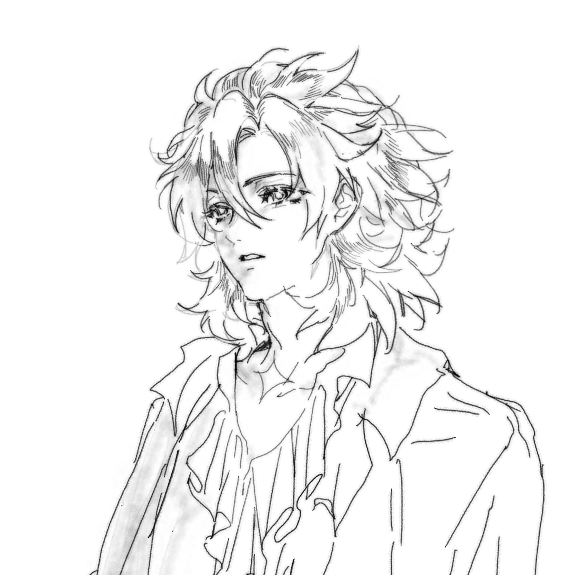

Polia
我看见了他，波莉娅！他在废墟之间闪耀， 他的美丽比大理石更明亮，比黎明更柔和。 我的心立刻被攫住，理智全然消散。 我战栗地走近他，而他却侧过目光， 含蓄而疏远，如同凡人祈祷前的维纳斯。 他以温柔却疏远的语气回答我： 波利菲洛，你的目光混淆了梦与爱情。你所渴求的并不在幻象里，而在现实中。从梦中醒来吧。 说完，他转身离去，只留下我徘徊在渴望与羞愧之间。被他的话击中，我仿佛化为石像。 舌头忘记了言语，心中失去了勇气。 然而在他的离去中，我反而燃起新的火焰，他的引诱成了我欲望的磨石。
我追随他，穿过废墟，穿过梦境，穿过时间的迷雾。 每一次接近，他都像是从我心中抽离一部分灵魂。 但我无法停止，我的爱如同烈火般燃烧， 即使被无视，即使被冷落，我仍然渴望他的存在。 我明白，这份爱是无用功，但我无法放弃。 你啊，你。你是我心中永恒的谜题， 你是我灵魂深处无法触及的光芒。 我在心底发誓——没有理性，没有恐惧， 能让我放弃对他那神圣身影的追寻。